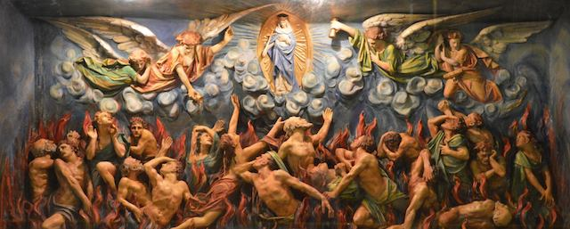

2017-06-12 08:00

Four years ago the Massachusetts legislature considered the Massachusetts Trust Act – H.1613 and S.1135 – twin bills which placed limits on ICE but had only a handful of co-sponsors. The bill was not sent directly to hell, but it landed not that far away. This is how spineless state Democrats deal with controversy.
In the last legislative session S.1258 once again tried to protect Massachusetts refugees – and once again the bill was sent to the purgatory known as the House Rules committee. This time it had 25 Senate co-sponsors.
In the current legislative session, S.1305, the Senate version of the Safe Communities Act, has 53 co-sponsors and H.3269, the House version, has 80. Political tides are turning and many Democrats have lost patience with spineless do-nothing representatives like mine and autocratic House speakers. And to those of you (Chris Markey and Robert DeLeo) effectively collaborating with the enemy’s ICE roundups – you have turned yourselves into a list of hacks who ought to be primaried.
MIRA has a great write-up on the Safe Communities Act but in a nutshell this is it:
Massachusetts has its own laws, which must be respected. Police departments, officers, and prisons may not be federalized. The Fourth Amendment must be applied equally to all residents of the Commonwealth, regardless of status. State resources and monies are not to be used for federal purposes. Constitutionally- guaranteed rights are to apply equally to everyone in the Commonwealth. The state will not make its databases available to ICE or Homeland Security. This is the Safe Communities Act.
Progressive Massachusetts has a great script for calling your legislator.
Flood the State House with calls. Remind your representative that sending Safe Communities to purgatory will result in similar political consequences for himself.